Exprimer
Photographies
Photographies d'environnement, de portrait et de produit autour des règles de composition.
PhotographieLightroomComposition
Bonjour, je suis
Étudiante en BUT MMI, je transforme les idées en expériences visuelles mémorables. Design graphique, identité visuelle et communication numérique — je crée des projets qui ont de l'âme.
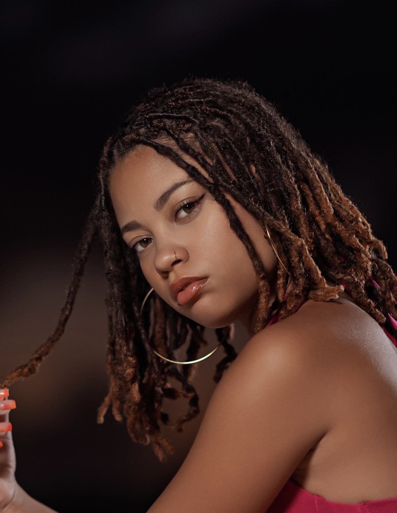
Projets réalisés
de formation MMI
Compétences maîtrisées
Clients accompagnés
Qui suis-je ?
Université des Antilles
Étudiante en 3ème année de BUT Métiers du Multimédia et de l'Internet (MMI) à l'IUT de Saint-Claude, Université des Antilles, je suis passionnée par la création visuelle, le design graphique et la communication numérique.
En alternance chez 10Gitallab, je crée quotidiennement des contenus visuels pour les réseaux sociaux (Facebook et Instagram) de plusieurs marques. Cette expérience concrète nourrit et enrichit ma pratique créative.
Curieuse et rigoureuse, j'aime dessiner, photographier et concevoir des identités visuelles qui racontent une histoire.
Mon chemin
Université des Antilles — IUT de Saint-Claude
Actuellement en 3ème année. Bac +3 en cours. Formation pluridisciplinaire autour du web, du design graphique, de l'audiovisuel et de la communication numérique.
Lycée Raoul Georges Nicolo
Baccalauréat Sciences et Technologies du Design et des Arts Appliqués. Diplôme obtenu.
10Gitallab
Création de contenus visuels pour la communication digitale de plusieurs clients. Travail quotidien sur les réseaux sociaux Facebook et Instagram.
Mélanine Studio
Missions de création graphique, retouche d'images et communication visuelle. Utilisation quotidienne de Photoshop et Illustrator.
Portfolio
Cliquez sur un projet pour découvrir l'étude de cas complète.
Photographies d'environnement, de portrait et de produit autour des règles de composition.
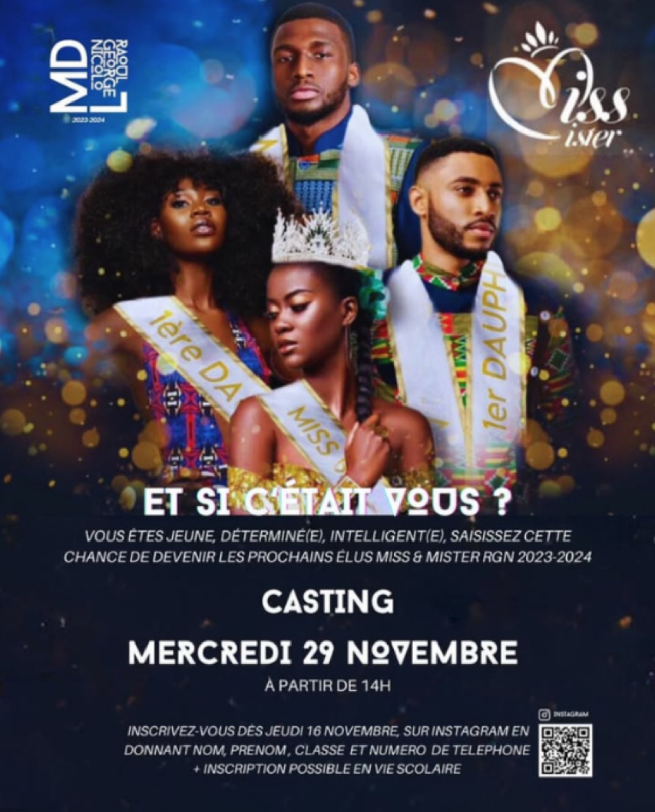
Affiches pour les événements de la MDL du lycée : castings, Noël, journée d'élégance.
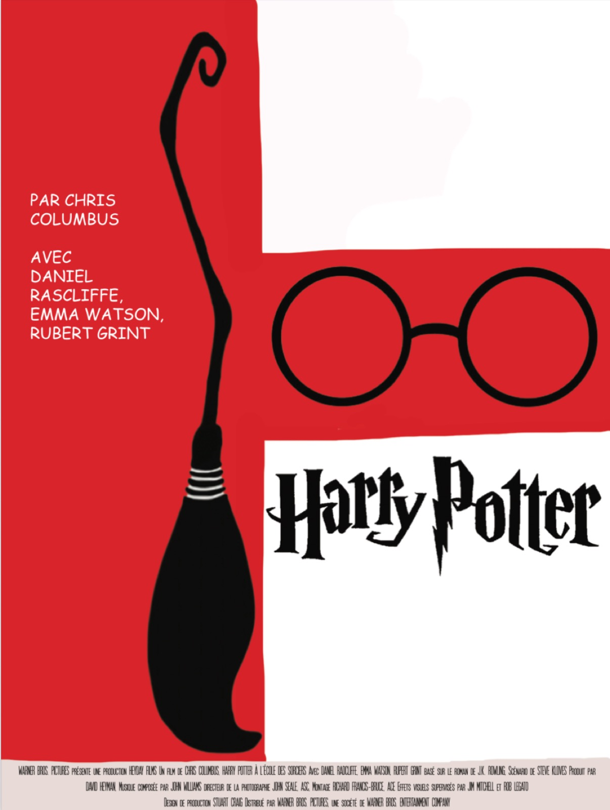
Affiches, retouche photo et création de logos réalisés au cours de l'année.
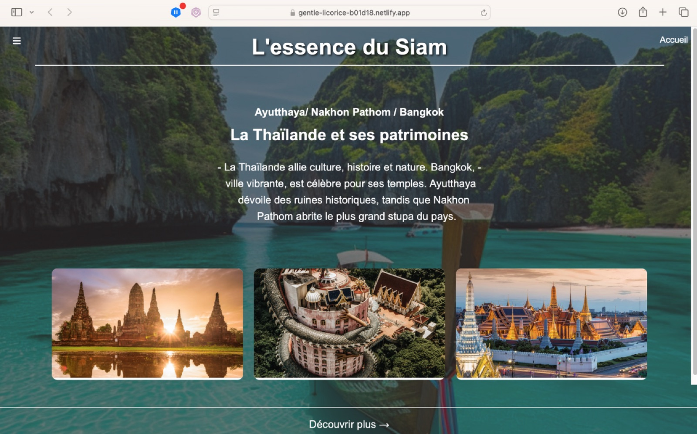
Site vitrine sur trois villes de Thaïlande et leurs liens historiques.
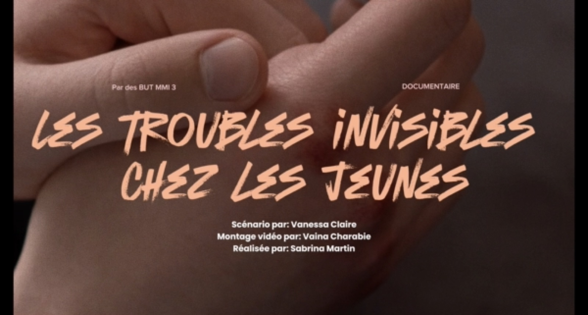
Courts-métrages de fiction et documentaire sur les troubles invisibles chez les jeunes.
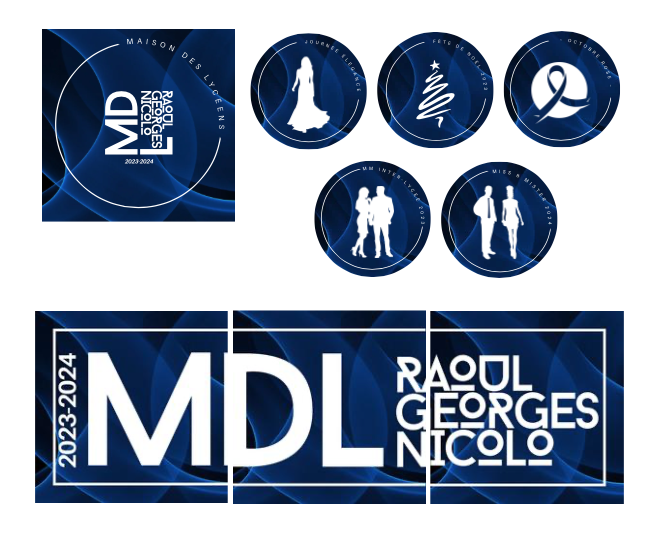
Visuels Instagram pour la MDL et propositions de logo pour une entreprise de crochet.
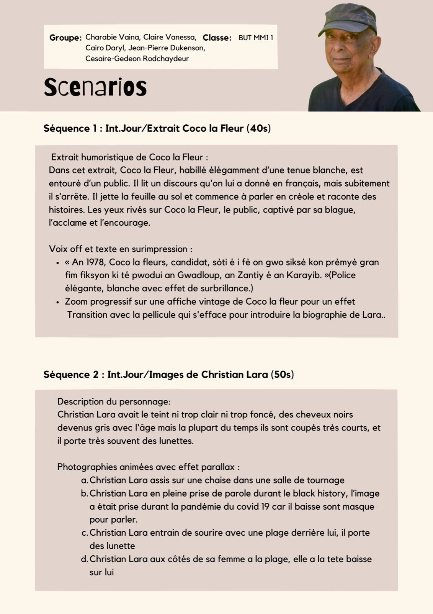
Scénario de documentaire sur le réalisateur guadeloupéen Christian Lara.
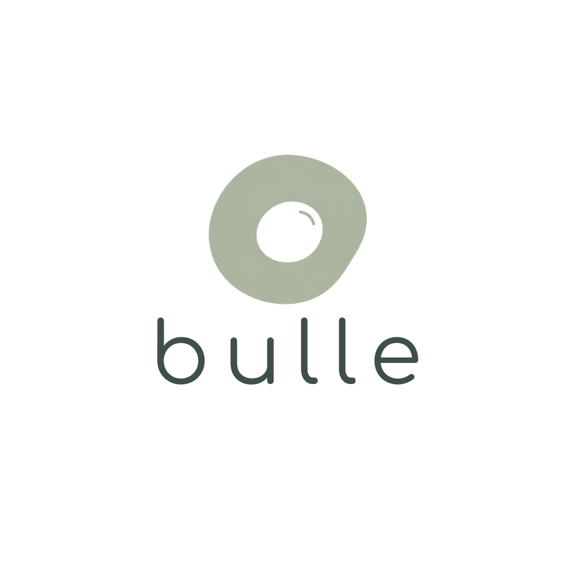
Logo, charte graphique, déclinaisons multi-supports et motion design.
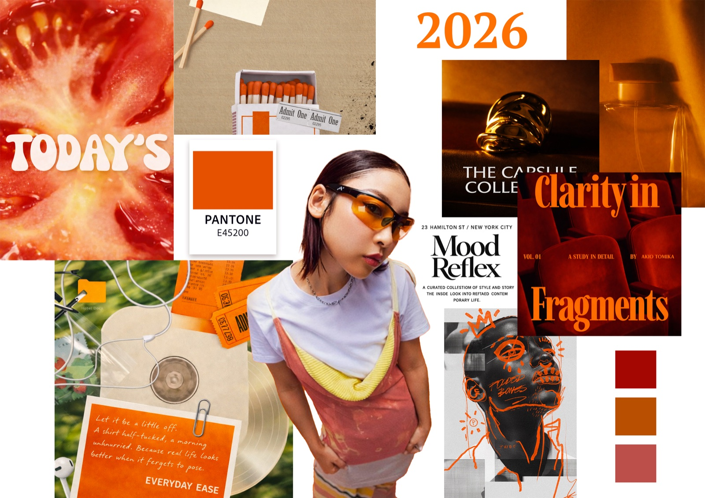
Veille des tendances graphiques 2026 et visuel animé expressif.
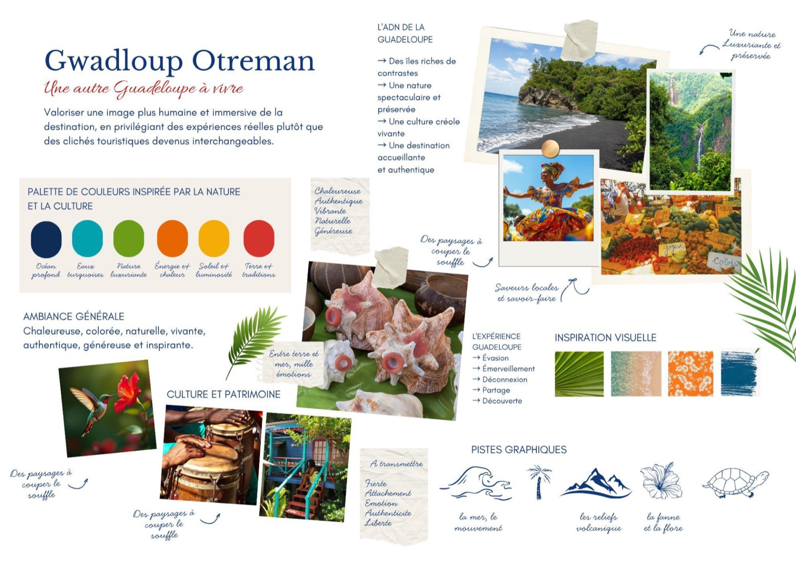
Charte graphique et contenus Instagram pour une campagne touristique, en groupe.
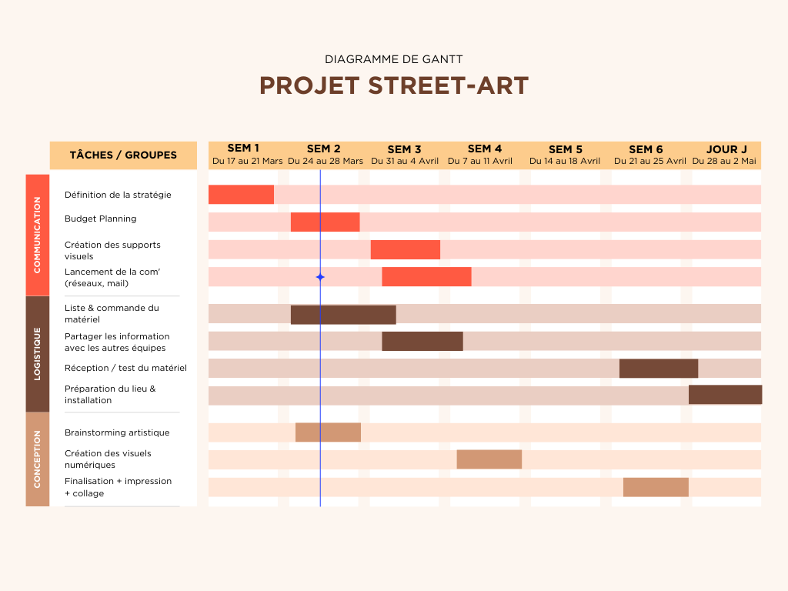
Projet de groupe sur le street-art, piloté en tant que cheffe de projet.
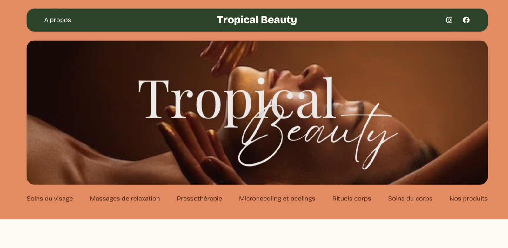
Site internet, affiches bilingues et business plan pour une entreprise fictive.
Savoir-faire
Solutions visuelles originales et adaptées
Respect des délais et des priorités
Veille permanente sur les tendances design
Ils me font confiance
Clients accompagnés durant mon alternance chez 10Gitallab : je crée pour eux des contenus visuels pour Facebook et Instagram. Cliquez sur un client pour découvrir les missions, réalisations et aperçus.
🏢 Client via 10Gitallab
Hôtel de luxe
Communication réseaux sociaux & image de marque
🏢 Client via 10Gitallab
Groupe hôtelier
Promotion digitale multi-établissements
🏢 Client via 10Gitallab
Marque locale
Identité visuelle & communication produits
🏢 Client via 10Gitallab
Grande distribution
Communication promotionnelle & réseaux sociaux
🏢 Client via 10Gitallab
Réseau automobile · Facebook uniquement
Communication digitale & réseau de garages
Ce que je propose
Création visuelle pour tous vos supports, print et numérique, avec un souci du détail constant.
Création d'identités visuelles fortes et cohérentes reflétant les valeurs de votre marque.
Production de contenus visuels engageants pour Facebook, Instagram et autres plateformes digitales.
Conception d'interfaces intuitives et esthétiques. Maquettes, wireframes et prototypes.
Retouche professionnelle et correction colorimétrique pour tous vos supports visuels.
Création de sites web élégants et modernes, centrés sur l'expérience utilisateur.
Travaillons ensemble